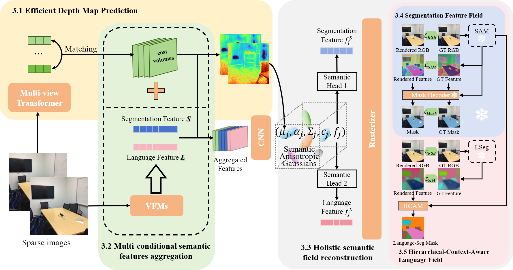

Abstract. Holistic 3D scene understanding, which jointly models geometry, appear- ance, and semantics, is crucial for applications like augmented reality and robotic interaction. Existing feed-forward 3D scene understanding methods (e.g., LSM) are limited to extracting language-based semantics from scenes, failing to achieve holistic scene comprehension. Additionally, they suffer from low-quality geometry reconstruction and noisy artifacts. In contrast, per-scene optimization methods rely on dense input views, which reduces practicality and increases complexity during deployment. In this paper, we propose SemanticSplat, a feed-forward semantic-aware 3D reconstruction method, which unifies 3D Gaussians with latent semantic attributes for joint geometry-appearance-semantics modeling. To predict the semantic anisotropic Gaussians, SemanticSplat fuses diverse feature fields (e.g., LSeg, SAM) with a cost volume representation that stores cross-view feature simi- larities, enhancing coherent and accurate scene comprehension. Leveraging a two-stage distillation framework, SemanticSplat reconstructs a holistic multi-modal semantic feature field from sparse-view images. Experiments demonstrate the effectiveness of our method for 3D scene understanding tasks like promptable and open-vocabulary segmentation.
We employ multiview transformers with cross-attention to extract features from multi-view images and use cost volumes for feature matching (3.1). Utilizing the multi-conditioned semantic features from Visual Feature Modules (VFMs) aggregated with the cost volumes (3.2), we predict Semantic Anisotropic Gaussians(3.3). Through a two-stage feature distillation process involving both segmentation(3.4) and language features(3.5), we reconstruct the holistic semantic feature field by jointly enforcing photometric fidelity and semantic consistency.
BibTex Code Here